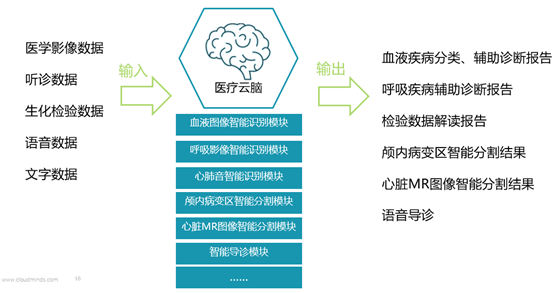
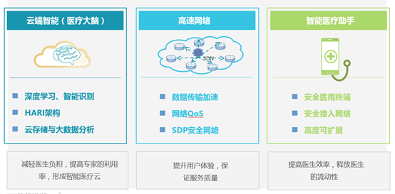

智慧医疗“云网端医”整体解决方案
一、 趋势与挑战
（一）当前医疗行业面临的挑战
1.资源分布不平均，专家不能充分充分利用
中国30%的城市集中了80%的医疗资源
2.医疗从业人员短缺,优质专家资源短缺
2013年中国每千人医生数2.06人
3.患者看病难看名医难
2014年中国三级医院诊疗人次139804.4万，挂号排长队、就诊排长队、缴费排长队,看
病时间短
（二）“云端智能”时代带来了医疗行业变革
1、“云端智能+医疗”将机器学习、云计算、大数据、物联网、便携式智能医疗设备等先进技术和理念进行有效组合
2、云计算与机器学习技术正成为医疗行业发展的巨大推动力，将云端智能与传统医疗业进行有效渗透与融合，形成具有“AI承载的精准医疗和普惠医疗服务”的新业态和新模式
3、实现患者、医务人员、医疗机构、医疗设备的互动，实现医疗资源优化配置，加快推进医疗行业由传统产业向现代服务业转型升级。
“云端智能”+医疗可实现：
• 智能导诊（院前综合咨询服务）
• 疾病精准诊断
• 手术介入（术前精准决策、术中精准操作）
• 化验单的精准解读
• 智能随访、患者问题实时解答
• 远程会诊…
二、解决方案内容
（一）达闼智慧医疗“云网端医”整体解决方案包括以中心医院为核心构建“医疗云脑”和”Dr. AI Phone智能医疗助手”实现普惠医疗两部分组成。
“医疗云脑”+“智能医疗助手”，成为第一代医疗云端智能机器人：即以中心医院为核心，构建智能医疗服务云平台——“医疗云脑”；基于“Dr. AI Phone”的智能医疗助手连接“医疗云脑”； “医疗云脑”进行数据分析，“智能医疗助手”执行具体操作，通过移动高速网络连接，为医生/患者提供智能医疗服务，形成“云-端”结合的智能机器人。
1、 医疗云脑的工作机制

2、 以医疗云脑和智能医疗助手为载体，可为医联体其他医院提供全流程智能医疗服务
（1）院前的智能导诊
深度学习现有临床数据
提供院前综合咨询服务
合理导诊、延伸服务、改善医患关系
（2）院中的辅助诊疗
儿科云脑+智能医疗助手，提供智能医疗服务
辅助疾病的精准诊断、 化验单的精准解读
辅助术前精准决策、手术环节的精准操作
（3）院后的诊后随访
患者随访工作
搜集患者康复数据
提供实时的康复指导建议
（二） “云网端医”整体解决方案示意图

三、方案亮点及客户价值
（一）方案亮点
1、提供端到端的安全防护，医疗应用更安心
• 在医疗人工智能和大数据领域占领技术前沿，医疗大数据应用的关键是安全
• 在”分级诊疗”新形势下，增强对医联体医院的话语权和影响力
—扩大中心医院对基层医疗机构和基层患者的影响力，为中心医院带来更多病源
—帮助基层医院和中小医院提升自身医疗水平和服务水平，吸引更多患者
2、帮助中心医院和医联体成员医院提升自我能力，占领更多市场
• 医疗云脑、智能医疗助手、智能导诊机器人的辅助使用，提升了医生临床诊断的准确性
• 帮助大医院和基层医院占领更多市场
—对大医院来说，医疗大脑+智能医疗助手的使用，将大大提升大医院对基层医院的辐射能力和基层初诊患者的影响力，将在未来“分级诊疗”趋势下，获得更多的患者来源
—对基层医院来说，可帮助基层医院和中小医院解决诊疗能力不足的问题，一方面与大医院联动，获得大医院支持；另一方面可以提升自身医疗水平和服务水平
3、帮助医院提供更丰富优质的医疗健康服务，满足居民就诊需求
远程问诊、医疗云脑、智能医疗助手、智能导诊机器人等系统的搭建，为患者提供了更丰富的就医途径、更好就医服务体验
移动专网、医疗安全终端、双域分隔、虹膜鉴权等，为患者诊疗数据提供全程安全保护，确保隐私，患者更放心
（二）达闼智慧医疗“云网端医”整体解决方案的客户价值
1、对中心医院有重要战略意义
人工智能应用体系的构建，可提升中心医院服务水平，占据技术前沿，增强对患者和基层医院的影响力，进而在市场竞争中占据更主动的位置：
效率-提高常规疾病诊断的自动、智能和效率
有效性-提高疑难病症诊疗方案有效性
服务水平-提升对患者的智能服务水平
影响力-增强对基层医院的影响力和话语权
2、大幅提高基层医院的诊疗水平和病患满意度
医疗大脑帮诊断，误诊率降低，病人更满意；医疗大脑辅助智能阅片，医生更放心；以大医院为核心的“智能诊断”，居民更信任。
四、应用场景
1、医疗云脑精准诊断血液疾病
功能：再生障碍性贫血、血友病、白血病等血液科疾病的涂片，图像自动分类、识别和诊断
目的：提高中心医院工作效率、降低基层医院误诊率
2、“医疗云脑”精准识别颅内病变区
功能：颅内病变区的自动提取和识别，利用深度学习算法模型，探测识别可能病变的区域
目的：辅助医生进行颅内病变的诊断，减少医生的工作量
3、“医疗云脑”精准定位小儿心脏疾病
功能：从小儿先天性心脏病的MR图像中分割出心脏和大血管
目的：精确定位心室和血管，辅助医生进行心脏手术，降低手术风险
4、“医疗云脑”智能导诊服务
机器深度学习现有临床数据，为患者提供院前综合咨询服务，起到合理导诊、延伸服务、改善医患关系的作用
• 医院大厅咨询、挂号、导诊等
• 院前轻问诊
• 与患儿互动，关爱患儿成长
5、智能医疗助手辅助基层医生完成诊断，提高医生工作效率
智能医疗终端可连接并采集第三方医疗设备如电子听诊器、血压计、心电仪、超声仪、血糖仪、血氧仪等的数据，并传输到医疗云脑，医疗云脑经过智能分析判断，将诊断结果和诊疗意见发送给智能医疗终端，辅助基层医生进行诊断。